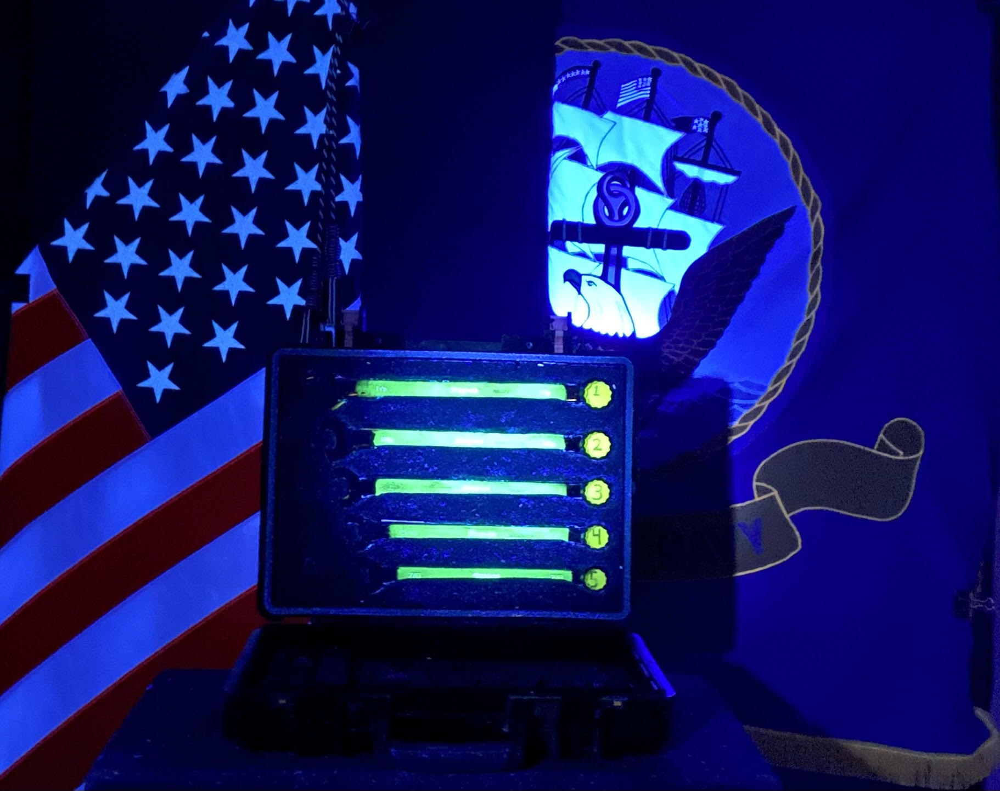

Materials Chemistry
Design and optimization of advanced metal coatings and composites for aerospace and maritime environments.

Design and optimization of advanced metal coatings and composites for aerospace and maritime environments.
Protective systems that mitigate corrosion and extend asset life, validated through treated vs. untreated metal testing.

Electrostamping and nanomaterial‑enhanced coatings delivering durable, high‑adhesion surfaces with improved wear resistance.

Integration of Glow Powder technology into cold‑spray repair processes for visual inspection and mission readiness.

Full‑spectrum laboratory management from test design and materials characterization to quality assurance.

Reliability and maintainability analysis, innovative maintenance practices, and disciplined risk management.